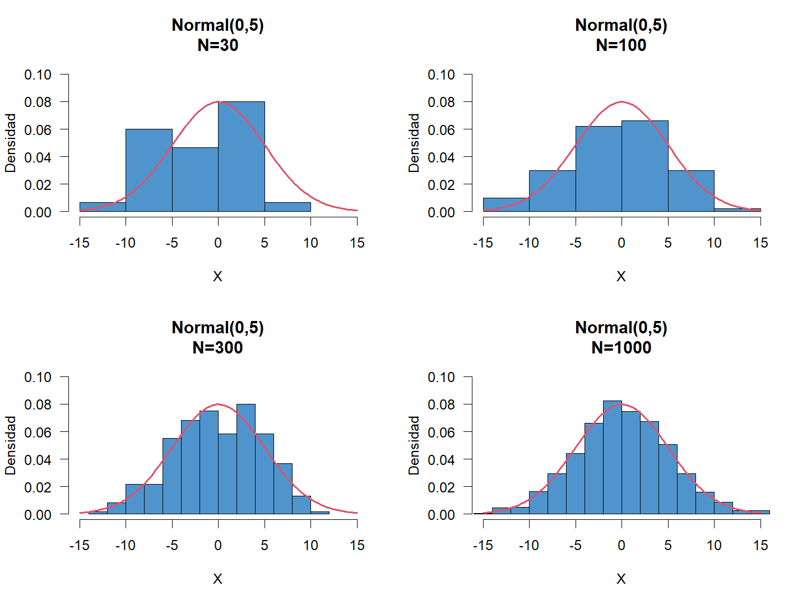

Distribuciones de Probabilidad
Variables Aleatorias
En la mayoría de problemas a los que comúnmente nos enfrentamos, la descripción del conjunto de posibles resultados de un experimento aleatorio puede ser complicado y por lo tanto el cálculo de probabilidades también se dificulta.
Por ejemplo, si una persona es seleccionada de una población, diversas características pueden ser de interés y cada una aporta al entendimiento de un fenómeno en especial, como son, el tiempo que emplea en transportarse de su casa al lugar de trabajo, que tan lejos está de su casa el sitio donde trabaja, cuantos hijos tiene, cuantas horas duerme, cuantas personas conforman su grupo familiar, cuanto gana, cuanto gasta, cuanto paga por servicios, cuantas llamadas hace diariamente, etc.
Una Variable Aleatoria es una función definida en un Espacio Muestral que asigna a cada resultado de un experimento aleatorio un valor real. Usualmente son denotadas con letras mayúsculas como (\(X\), \(Y\), \(Z\), \(T\), etc). Al conjunto de todos los posibles resultados de una variable aleatoria se le llamará Rango de la variable (\(A_X\))
Variables Aleatorias Discretas
Un grupo de \(n\) sujetos es sometido a cierto tratamiento y después de un tiempo se registra cuantos logran mejorar con dicho tratamiento. Sea \(X\) la variable aleatoria que cuenta cuántos sujetos mejoran con el tratamiento. Entonces el rango de \(X\) será \(A_X=0,1,2,...,n\).
En una gran población se encuestan de manera aleatoria sujetos hasta encontrar el primero que responde afirmativamente a una pregunta de interés. Si \(X\) es la variable aleatoria que cuenta el número de sujetos encuestados hasta encontrar el primero que responde afirmativamente, entonces el rango de \(X\) está dado por \(A_X=1,2,3,...\)
Este tipo de variables se traducen en funciones matemáticas o valores tabulados, y la probabilidad se calcula a través de la función de masa de probabilidad (f.m.p). Sea la variable aleatoria discreta \(X\), para cualquier resultado posible de \(X\) se cumple que:
- \(p(x) \geq 0\) para todo \(x\) en el rango de \(X\).
- \(\sum_x p(x)=1\)
- \(p(x)=P(X=x)\)
- \(P(X < x) = \sum_{min}^{x-1} p(x)\)
- \(P(X \leq x) = \sum_{min}^{x} p(x)\)
- \(P(X > x) = \sum_{x+1}^{max} p(x)\)
- \(P(X \geq x) = \sum_{x}^{max} p(x)\)
Suponga un experimento aleatorio que consta en consultar una familia conformada por 3 hijos, en donde, se asume que la probabilidad de ser niño o niña es la misma. Si se define la variable aleatoria \(X\), el número de niñas que hay en la familia.
Sea \(H\) la letra que representa que el miembro de la familia es niño y \(M\) para denotar que el miembro de la familia es niña, entonces, se tendrá que el espacio muestral se define como \[\Omega=\{HHH,HHM,HMH,MHH,HMM,MHM,MMH,MMM\}\] Como el interés de la variable aleatoria \(X\) radica en el número de niñas que hay en la familia, se tendrá entonces que a partir del espacio muestral \(\Omega\) se puede contar el número de éxitos que hay en cada situación asignando los valores \(0\), \(1\), \(2\) y \(3\) a la variable aleatoria \(X\).
Para encontrar la función de probabilidades del experimento aleatorio asociadas a la variable aleatoria \(X\), podemos emplear la definición de la probabilidad a priori, aprovechando que todos los puntos del espacio muestral poseen la misma probabilidad. En otro caso podríamos emplear un diagrama de árbol para encontrar dichas probabilidades.
Para el caso de \(X=0\), observamos que de las \(8\) posibles situaciones que hay dentro del espacio muestral \(\Omega\), solo tenemos una situación en donde no hay ninguna mujer, y en consecuencia, al aplicar la definición de probabilidad a priori, se tendrá que la probabilidad de que \(X=0\), es: \[P(X=0)=\frac{1}{8}\] Procedimiento similar se aplica para \(X=1\), \(X=2\) y \(X=3\), obteniendo como resultado la siguiente tabla de probabilidades:
\(X\) \(0\) \(1\) \(2\) \(3\) \(p(x)\) \(\frac{1}{8}\) \(\frac{3}{8}\) \(\frac{3}{8}\) \(\frac{1}{8}\) Para calcular la probabilidad de que en una familia que posee tres hijos, hayan 2 o más niñas entonces se aplica la suma de probabilidades. \[P(X \geq 2)=\sum_{x=2}^{3} p(x)=p(2)+p(3)=\frac{3}{8}+\frac{1}{8}=\frac{1}{2}\]
Función de distribución acumulada caso discreto
En algunos casos es posible calcular una función que acumula las probabilidades puntuales de la variable en rangos definidos. La función de distribución acumulada (f.d.a) denotada por \(F(x)\), para una variable aleatoria discreta \(X\) con distribución de probabilidad \(p(x)\) es de la forma
\[F(x)=P(X \leq x)=\sum_{t \leq x} p(t) \qquad -\infty<x<\infty\]
Para cualquier \(x\) dentro del rango de \(X\), \(F(x)\) será la suma acumulada de todos los valores de rango de \(X\) menores a \(x\).
Nota: Si se quieren calcular probabilidades con la función de distribución acumulada en el caso discreto, entonces, si \(a\) y \(b\) son dos números constantes enteras, deberán tenerse en cuenta las siguientes reglas
- \(P(a\leq X \leq b)=P(X\leq b)-P(X \leq a-1)=F(b)−F(a−1)\)
- \(P(a<X\leq b)=P(X\leq b)-P(X \leq a)=F(b)−F(a)\)
- \(P(a \leq X<b)=P(X\leq b-1)-P(X \leq a-1)=F(b−1)−F(a−1)\)
- \(P(a<X<b)=P(X\leq b-1)-P(X \leq a)=F(b−1)−F(a)\)
- \(P(X\geq a)=1−P(X<a)=1−F(a−1)\)
- \(P(X>a)=1−P(X\leq a)=1−F(a)\)
- \(P(X\leq b)=F(b)\)
- \(P(X<b)=F(b−1)\)
Basado en el ejemplo anterior, calculemos la función de distribución acumulada \(F(x)\) y calculemos la probabilidad de que en una familia que posee tres hijos, hayan 2 o más niñas.
A partir de la tabla donde se define la función de masa de probabilidad se procede a realizar el cálculo de la función de distribución acumulada \(F(x)\). Para ello, debemos calcular las siguientes probabilidades. \[\begin{align*} F(0) =& P(X\leq 0)=p(0)=1/8\\\\ F(1) =& P(X\leq 1)=p(0)+p(1)=4/8\\\\ F(2) =& P(X\leq 2)=p(0)+p(1)+p(2)=7/8\\\\ F(3) =& P(X\leq 3)=p(0)+p(1)+p(2)+p(3)=8/8 \end{align*}\] Entonces, mediante el empleo de estas probabilidades, podemos construir la función de distribución acumulada para la variable aleatoria \(X\), tal que \[\begin{align*} F(x) = \begin{cases} 0 & x<0 \\ \frac{1}{8} & 0\leq x<1 \\ \frac{4}{8} & 1\leq x<2 \\ \frac{7}{8} & 2\leq x<3 \\ \frac{8}{8} & x\geq 3 \end{cases} \end{align*}\] Dado que el interés es calcular la probabilidad de que el número de niñas sea mayor a \(1\) pero no más de \(2\), entonces se tendrá que la probabilidad de interés es la siguiente \[P(1 < X \leq 2)\] Entonces, siguiendo las reglas anteriormente expuestas, dicha probabilidad puede calcularse mediante \[\begin{align*} P(X \geq 2) & = 1 - F(2-1) \\ & = 1 - F(1) \\ & = 1 - \frac{4}{8}\\ & = \frac{4}{8} = \frac{1}{2} \end{align*}\] y por tanto, se tendrá que la probabilidad de que en una familia de \(3\) hijos, tengan \(2\) o más niñas es de 50%.
Es usual que en ejercicios de estadística o en preguntas de investigación se manifieste en palabras los símbolos de comparación o relación para el cálculo de probabilidades.
\(\quad = \qquad\) Igual;
Exactamente
\(\quad < \qquad\)
Menor que; Inferior a
\(\quad >
\qquad\) Mayor que; Superior a
\(\quad \leq \qquad\) A lo más; No mas de; A
lo sumo, Máximo; Menor o igual que
\(\quad
\geq \qquad\) Al menos; No menos de; Mínimo; Menor igual que
Ejemplo
Se lanza dos dados, sea \(X\) la variable que calcula la suma del lanzamiento de los dos dados. - Construya la fmp - Calcule \(P(5 \leq X < 9)\)
| 1 | 2 | 3 | 4 | 5 | 6 | |
|---|---|---|---|---|---|---|
| 1 | 2 | 3 | 4 | 5 | 6 | 7 |
| 2 | 3 | 4 | 5 | 6 | 7 | 8 |
| 3 | 4 | 5 | 6 | 7 | 8 | 9 |
| 4 | 5 | 6 | 7 | 8 | 9 | 10 |
| 5 | 6 | 7 | 8 | 9 | 10 | 11 |
| 6 | 7 | 8 | 9 | 10 | 11 | 12 |
El rango de la variable es \(A_X=\{2,3,4,5,6,7,8,9,10,11,12\}\), entonces la fmp sería:
| X | 2 | 3 | 4 | 5 | 6 | 7 | 8 | 9 | 10 | 11 | 12 |
|---|---|---|---|---|---|---|---|---|---|---|---|
| p(x) | 1/36 | 2/36 | 3/36 | 4/36 | 5/36 | 6/36 | 5/36 | 4/36 | 3/36 | 2/36 | 1/36 |
\[\begin{align*} P(5 \leq X < 9) =& P(X\leq8) - P(X\leq 4)\\ =& \left[\frac{1+2+3+4+5+6+5}{36}\right] - \left[\frac{1+2+3}{36}\right]\\ =& \frac{26}{36} - \frac{6}{36} = 20/36 \end{align*}\]
Variables Aleatorias Continuas
De la producción diaria de jabones se escoge uno al azar y se mide su pH. Sea \(X\): el pH del jabón. El rango de la variable aleatoria \(X\) es cualquier valor entre 0 y 14. Así: \(A_X = [0 , 14]\).
El desgaste de una llanta en un período de un año es una variable aleatoria. Si \(X\) es la variable aleatoria que representa el desgaste en décimas de milímetros, \(A_X = (0 , a)\), donde \(a\) representa la profundidad mínima de la llanta estando nueva.
Este tipo de variables se caracteriza porque el rango es un intervalo real, y su comportamiento está determinado por una función matemática y la probabilidad se calcula através de la función de densidad de probabilidad (p.d.f). Se dice que la función \(f(x)\) es una función de densidad de probabilidad (fdp) de la variable aleatoria continua \(X\), definida en el conjunto de números reales si:
- \(f(x)\geq0\) para todo \(x\) en los Reales
- \(\int_{-\infty}^{\infty} f(x)dx=1\)
- \(\int_b^a f(x)dx=P(a<X<b)\)
- \(P(x<X<x)=\int_x^x f(x)dx =0\)
Sea \(X\) una variable aleatoria continua. Entonces una función de probabilidad de \(X\) es una función \(f(x)\) tal que para dos números cualesquiera \(a\) y \(b\) con \(a\leq b\).
\[P(a \leq X \leq b)=\int_a^b f(x)\,dx\]
Es decir, la probabilidad de que \(X\) asuma un valor en el intervalo \([a; b]\) es el área bajo la curva de la densidad de probabilidad. La gráfica de \(f(x)\) se conoce como curva de densidad.
Función de distribución acumulada caso continuo
La función de distribución acumulada (fda) denotada por \(F(x)\), para una variable aleatoria continua \(X\) con distribución de probabilidad \(f(x)\) es de la forma
\[F(x)=P(X\leq x)=\int_{-\infty}^x f(t)dt\]
para cualquier \(x\), \(F(x)\) es el área izquierda bajo la curva de densidad.
Nota: Si se quieren calcular probabilidades con la función de distribución acumulada en el caso continuo, entonces, si \(a\) y \(b\) son dos números constantes, deberán tenerse en cuenta las siguientes reglas
- \(P(a\leq X\leq b)=F(b)−F(a)\)
- \(P(X\geq a)=1−F(a)\)
- \(P(X\leq b)=F(b)\)
Nota: Recordar que en el caso continuo, las probabilidad con o sin la igualdad son equivalentes, y por tanto, solo se escriben las tres reglas anteriores para generalizar todos los casos.
Valor Esperado
El Valor Esperado (o Esperanza Matemática) de una variable aleatoria es un concepto muy importante en el estudio de las distribuciones de probabilidad. La esperanza de una v.a tiene sus orígenes en los juegos de azar, pues los apostadores deseaban saber cuál era su esperanza de ganar repetidamente un juego.
Para v.a se entendería como el valor promedio de \(X\) después de un número grande de experimentos. Es un valor de posición que denota el centro de masa de la distribución. Si \(X\) es una variable aleatoria (discreta o continua) con fmp \(p(x)\) o fdp \(f(x)\), entonces la media o valor esperado de la variable aleatoria se denota por \(E[X]\) o \(\mu\) está dada por
\[E[X] = \begin{cases} \sum_{x} x p(x) &; \quad \text{Si X es Discreta}\\ \\ \int\limits_{-\infty}^{+\infty} x f(x) &; \quad \text{Si X es Continua}\\ \end{cases}\]
El valor esperado del número de niñas que hay en una familia que posee 3 hijos sería: \[\begin{align*} E[X]&=\sum_{0}^3x\,p(x) \\\\ &=0\,p(0)+1\,p(1)+2\,p(2)+3\,p(3) \\\\ &=0\left(\frac{1}{8}\right)+1\left(\frac{3}{8}\right)+2\left(\frac{3}{8}\right)+3\left(\frac{1}{8}\right) \\\\ &=0+\frac{3}{8}+\frac{6}{8}+\frac{3}{8} \\\\ &=\frac{12}{8} \\\\ &=1.5 \end{align*}\] es decir, se tedrá que en una familia que posea \(3\) hijos, se espera encontrar que el número promedio de niñas será de \(1.5\) niñas.
Propiedades
Sea \(a\) y \(b\) dos números constantes (reales) y \(X\) una variable aleatoria, entonces se tiene que
- \(E[a]=a\)
- \(E[X+b]=E[X]+b\)
- \(E[aX]=aE[X]\)
- si \(g(X)\) es una función de \(X\), entonces
\[E[g(X)] = \begin{cases} \sum_{x} g(x)p(x) &; \quad \text{Si X es Discreta}\\ \\ \int\limits_{-\infty}^{+\infty} g(x)f(x) &; \quad \text{Si X es Continua}\\ \end{cases}\]
Varianza
Sea \(X\) una variable aleatoria (discreta p continua) con fmp \(p(x)\) o pdf \(f(x)\), entonces si \(g(X) = (X - E[X])^2\), entonces \(E[g(X)]\) será la varianza de \(X\) que se denota \(Var[X]\) o \(\sigma^2\) estará dada por
\[Var[X] = E\left\{\left(X-E[X]\right)^2\right\}=E[X^2]-E[X]^2\]
además, la raíz cuadrada de la varianza de \(X\) se llama desviación estándar de \(X\), se denota por \(SD[X]\) o \(\sigma\) y se define como
\[SD[X] = \sqrt{Var[X]}\]
La desviación estándar del número de niñas que hay en una familia que posee 3 hijos requiere del cálculo de la varianza, entonces primero se debe calcular \(E(X^2)\): \[\begin{align*} E[X^2]&=\sum_{0}^3x^2\,p(x) \\\\ &=0^2\,p(0)+1^2\,p(1)+2^2\,p(2)+3^2\,p(3) \\\\ &=0\left(\frac{1}{8}\right)+1\left(\frac{3}{8}\right)+4\left(\frac{3}{8}\right)+9\left(\frac{1}{8}\right) \\\\ &=0+\frac{3}{8}+\frac{12}{8}+\frac{9}{8} \\\\ &=\frac{24}{8} \\\\ &=3 \end{align*}\] Entonces la varianza es: \[\begin{align*} Var[X]&=E[X^2] - E[X]^2 \\ &=3 - (1.5)^2 \\ &=3 - 2.25 \\ &=0.75 \end{align*}\] Por lo tanto la desviación estándar es \(SD[X]=\sqrt{0.75}=0.8660\). Es decir, se tendrá que el número promedio de niñas que tiene una familia que posee \(3\) hijos es de \(1.5\) niñas, con una desviación estándar de \(0.8660\) niñas.
Propiedades
- \(Var[X]=E[X^2]-E[X]^2\)
- \(Var[a]=0\), donde \(a\in\mathbb{R}\)
- \(Var[aX+b]=a^2Var[x]\), donde \(a,b \in\mathbb{R}\)
Por muchos años los matemáticos y estadísticos han establecido funciones de probabilidad a diversos fenómenos de la naturaleza y la sociedad. No obstante, en algunos casos se observa que se cumplen ciertos patrones, por lo tanto, el comportamiento de un fenómeno se puede modelar con la misma función de probabilidad de otro fenómeno. En este sentido, se establecen las distribuciones de probabilidad como funciones definidas para entender el comportamiento de fenómenos que tienen un patrón identificable.
Distribución Binomial
Proceso de Bernoulli
Una secuencia de ensayos de Bernoulli forma un proceso de Bernoulli, si se cumplen las siguientes condiciones:
1. En cada ensayo ocurre uno de dos posibles resultados, mutuamente excluyentes. Uno de los posibles resultados se denota (arbitrariamente) como un exito y el otro, como fracaso.
2. La probabilidad de un exito, denotado por \(p\), permanece constante de un ensayo a otro, y la probabilidad de fracaso, \(1-p\), se denota con \(q\).
3. Los ensayos son independientes, es decir, el resultado de algún ensayo en particular no es afectado por el resultado de cualquier otro ensayo.
La distribución binomial es una distribución de probabilidad discreta que cuenta el número de éxitos en una secuencia de n ensayos de Bernoulli independientes entre sí, con una probabilidad fija p de ocurrencia del éxito entre los ensayos. Para \(n = 1\), la binomial se convierte, de hecho, en una distribución de Bernoulli.
\[p(x)={n \choose x}p^x(1-p)^{n-x}\quad x = \{0, 1, 2, \dots , n\}\]
Por notación \(X \sim Bin(n,p)\), además \(E[X]=np\) y \(VAR[X]=np(1-p)\).
Ejemplo
Suponga que en un estudio se encontró que 2 de cada 5 estudiantes no desea tomar clases virtuales. Si se selecciona aleatoriamente 20 estudiantes, ¿Cuál es la probabilidad de que no menos de 6 pero menos de 12 deseen tomar clases virtuales?
En este caso estamos interesados en la variable \(X\), que representa el número de estudiantes que desean tomar clases virtuales, en donde sabemos que si, 2 de cada 5 no quieren tomar clases virtuales, entonces se tendrá que 3 de cada 5 si desean tomar clases virtuales. Por tanto al aplicar la definición de frecuencia relativa se tiene que
\[p=\frac{\text{Número de éxitos}}{\text{Número de ensayos (muestras)}}=\frac{3}{5}=0.6\]
siendo \(p\) la probabilidad de que un estudiante desee tomar clases virtuales. Entonces la distribución de probabilidad es:
\[p(x)={20 \choose x}p^x(1-p)^{20-x}\quad x = \{0, 1, 2, \dots , 20\}\]
Ahora, se tiene interés en conocer la probabilidad de que no menos de 6 pero menos de 12 deseen tomar clases virtuales. En este caso, la probabilidad asociada puede calcularse de la siguiente manera.
\[\begin{align*} P(6 \leq x < 12) &= \sum_{x=6}^{11} \left(\begin{array}{c}20\\ x\end{array}\right)0.6^x(1-0.6)^{20-x} \\\\ &= \left(\begin{array}{c}20\\ 6\end{array}\right)0.6^6(0.4)^{20-6} + \ldots + \left(\begin{array}{c}20\\ 11\end{array}\right)0.6^{11}(0.4)^{20-11} \\\\ &= 0.4027898 \end{align*}\]
Es decir que, la probabilidad de que como mínimo 6 pero menos de 12 estudiantes deseen tomar clases virtuales de los 20 seleccionados, es del 40.28%.

Distribución binomial con n=10, p=0.1
Se puede observar que para una distribución binomial con parámetro \(p < 0.5\) la distribución presenta asimetría hacia la izquierda. Por otra parte la distribución empírica se ajusta a la distribución teórica para tamaños de muestra grandes; para el caso de la distribución con parámetro \(p=0.1\), se observa que hay un buen ajuste para tamaños de muestra \(N \geq 50\).
Distribución Binomial con n=10, p=0.5
Se puede observar que para una distribución binomial con parámetro \(p = 0.5\) la distribución teórica es simétrica. Por otra parte la distribución empírica se ajusta a la distribución teórica para tamaños de muestra muy grandes; contrario al caso anterior, el ajuste es más lento y se require tamaños de muestra \(N \geq 1000\).
Distribución Binomial con n=10, p=0.9
Se puede observar que para una distribución binomial con parámetro \(p > 0.5\) la distribución presenta asimetría hacia la derecha. Por otra parte la distribución empírica se ajusta a la distribución teórica para tamaños de muestra grandes; para el caso de la distribución con parámetro \(p=0.9\), se observa que hay un buen ajuste para tamaños de muestra \(N \geq 50\).
Suponga que se sabe que 30 por ciento de cierta poblacion es inmune a alguna enfermedad. Si se escoge una muestra aleatoria de 10 elementos de entre esta población, ¿Cuál es la probabilidad de que dicha muestra contenga exactamente cuatro personas inmunes?
El Hospital Pablo Tobón Uribe sabe que cada 7 de 150 deportistas presentan desgarros musculares, si en un mes consultan 35 deportistas al hospital ¿Cuál es la probabilidad de que más de dos presenten desgarros musculares? ¿Cuántos deportistas se esperan que presenten desgarros musculares en el mes?
En un estudio realizado en una comunidad determinó que el 4% de los hogares no adquieren productos ultraprocesados en su canasta familiar. El gobierno local desea formular una estrategia para que disminuya el consumo de este tipo de productos basado en una encuesta aleatoria a 18 hogares. ¿Cuál es la probabilidad que se encuentren la menos de 3 pero máximo 8 hogares que adquieran productos ultraprocesados?
Suponga que se sabe que en cierta poblacion 10 por ciento es daltonica. Si se extrae una muestra aleatoria de 25 personas de esa poblacion, encuentre la probabilidad de que existan cinco o más daltónicos. Si se espera que hayan más de dos daltónicos, ¿Cuál es la probabilidad de que a lo sumo se encuentren cuatro?
Sobre la base del amilisis de datos recolectados por el National Center for Health Statistics, Najjar y Rowland informaron que 25.7 por ciento de las personas adultas de EUA tienen sobrepeso. Si se extrae una muestra aleatoria simple de 20 adultos, encuentre la probabilidad de que el numero de personas con sobrepeso, dentro de la muestra, sean:
- Exactamente tres personas
- Tres o mas personas
- Menos de tres
- Entre tres y siete, inclusive
Distribución Normal
La Distribución Normal o Gaussiana es indudablemente la más importante y la de mayor uso de todas las distribuciones de probabilidad continua. Es la piedra angular en la aplicación de la inferencia estadística en el analisis de datos, puesto que las distribuciones de muchas estadísticas muestrales tienden hacia la distribución normal conforme crece el tamaño de muestra.
- Precipitación pluvial
- Temperaturas
- Mediciones en organismos vivos
- Calificaciones de pruebas de actitud
- Mediciones físicas en manufactura
- Antropometría
- Errores de instrumentación
Debe tenerse mucho cuidado al suponer para una situación dada un modelo de probabilidad normal sin previa comprobación. Si bien es cierto que esta distribución es la de mayor uso, también es de la que más se abusa. Quizás por la mala interpretación de la palabra “normal”, especialmente si se aplica su significado literal de “patrón o estándar aceptado”.
Es posible que una distribución normal proporcione de manera razonable una aproximación alrededor de una media de una variable aleatoria; sin embargo, puede resultar que para valores extremos se encuentren en cualquier dirección. La apariencia gráfica de la distribución normal es una curva simétrica con forma de campana, que se extiende sin límite tanto en dirección positiva como negativa.
Sea \(X\) una variable aleatoria continua, se dice que \(X\) tiene una distribución normal si su f.d.p es de la forma:
\[f(x)=\cfrac{1}{\sqrt{2 \pi} \sigma} \mathit{e}^{- \frac{1}{2} \frac{(x-\mu)^2}{\sigma^2}};\qquad -\infty< x <\infty \quad \mu \in \mathit{R}\quad \sigma>0\]
Por notación \(X \sim N(\mu,\sigma^2)\). Los parámetros \(\mu\) y \(\sigma^2\) se les conoce de localización y escala, respectivamente. Las siguientes afirmaciones se cumplen para la variable aleatoria \(X\).
- El área abajo de curva normal comprendida entre \((−\infty, \infty)\) es igual a 1.
- La normal es simétrica respecto a \(\mu\). Como consecuencia de esto, el área bajo de la curva en el intervalo \([\mu, \infty)\) es igual a 0.5.
- La distribución normal tiene forma de campana.
- La normal queda completamente caracterizada con el conocimiento de sus parámetros de localización y de escala.
- La media es igual a la mediana y a su vez igual a la moda.
- En la práctica la normalidad se alcanza de manera aproximada.
- \(E[X]=\mu\) y \(Var[X]=\sigma^2\).
- Cuanto más grande es el parámetro \(\sigma^2\) el gráfico de la función es mas “achatada” y de colas más largas.
Normal Estándar
Cuando \(\mu=0\) y \(\sigma^2=1\), se obtiene una distribución normal especial, conocida como Normal Estándar y usualmente es denotada cola letra \(Z\) y se escribe \(Z \sim N(0,1)\).
\[P(x_1 < X < x_2)= \int\limits_{x_1}^{x_2} \cfrac{1}{\sqrt{2 \pi} \sigma} \large e^{- \frac{1}{2} \frac{(x-\mu)^2}{\sigma^2}} \small dx\]
Esta probabilidad no puede ser resuelta de manera explícita, además cada vez que se modifique \(\mu\) o \(\sigma^2\), se debe calcular de nuevo la integral.
Normalización
Para evitar este problema, se utiliza el cambio de variable \(Z=\frac{X-\mu}{\sigma}\), del cual se obtiene que \(dz=\frac{1}{\sigma}dx\).
\[ \begin{aligned} P(x_1 < X < x_2) &= \int\limits_{z_1}^{z_2} \cfrac{1}{\sqrt{2 \pi}} \mathit{e}^{- \cfrac{z^2}{2}} dz \\ &= P(z_1 < Z < z_2)\\ \end{aligned} \]
donde \(z_1=\frac{x_1-\mu}{\sigma}\) y \(z_2=\frac{x_2-\mu}{\sigma}\). Esto indica que cualquier cálculo de probabilidades para una variable aleatoria \(N(\mu, \sigma^2)\) puede reducirse al cálculo de probabilidades con una variable aleatoria \(N(0,1)\). El proceso de transformar una v.a normal en una normal estándar se conoce como Estandarización o Normalización.

Normalización
Para el cálculo de probabilidades con una variable \(N(0, 1)\), la c.d.f. estará dada por:
\[\Phi(z)=P(Z \leq z)=\int\limits_{-\infty}^{z} \cfrac{1}{\sqrt{2 \pi}} \large e^{- \frac{z^2}{2}} \small dz\]
De esta manera se tiene que:
\[P(x_1 < X < x_2)=P(z_1 < Z < z_2)=\Phi(z_2)-\Phi(z_1)\]
Los valores de la función \(\Phi(z)\) están tabulados en casi todos los textos de estadística.
Cálculo de probabilidades
Sea \(Z\) una v.a tal que \(Z \sim N(0,1)\)
\(P(Z = z) = 0\)
\(P(Z>z)=1-P(Z \leq z)\)
\(P(Z<-z)=P(Z>z)\)
\(P(-z < Z < 0) = P(0 < Z < z)\)
\(P(Z < 0) = P(Z > 0) = \cfrac{1}{2}\)
\(P(-z_1 < Z < -z_2)=P(z_2 < Z < z_1)\)
Características Distribución Normal
Percentiles en una Normal Estándar
Sea \(0 < \alpha < 1\) y suponga que \(Z \sim N(0,1)\). El valor de \(Z\) que deja un área \(\alpha\) a la derecha se denota \(z_{\alpha}\). Es decir,
\[P(Z>z_{\alpha})=\alpha\]
\(z_{\alpha}\) es llamado percentil \(100(1-\alpha)\%\) de la distribución de \(Z\).
Ejemplo Manejo de la tabla
Suponga que poseemos una distribución normal estándar, tal que \(Z \sim N(0,1)\). Entonces, a partir de esta distribución y empleando la Tabla de la Distribución Normal Estándar, calcule:
- \(P(Z \leq 1.96)\)
- \(P(−2.42<Z \leq 0.24)\)
Para calcular probabilidades con la tabla de la distribución normal estándar, es necesario tener en cuenta el funcionamiento de la tabla misma, y para ello, se debe entender su funcionamiento. Y para ello se presenta la siguiente imagen.
TablaNormal
En donde, se aprecia que, los cuadros rojos representan los valores críticos \(z\) que se emplea para calcular probabilidades, en donde, el cuadro rojo de la parte izquierda muestra la parte entera y el primer decimal, mientras que el cuadro rojo de la parte superior muestra el segundo decimal. El cuadro azul representa las probabilidades \(\alpha\) que se desean calcular a partir de los valores críticos. Finalmente, el cuadro azul claro representa el funcionamiento de la tabla , la cual muestra las probabilidades que poseen la forma \(P(Z<z)=\alpha\).
La primera probabilidad a calcular es \(P(Z\leq1.96)\). Entonces como esta probabilidad tiene la estructura establecida por la tabla \(P(Z\leq z)\), será cuestión de buscar el valor crítico 1.96 para localizar la probabilidad asociada, tal que se busca en la parte izquierda, el valor 1.9 y en la parte superior el valor 0.06, y en donde se encuentre el cruce de ambos valores, se encontrará el valor de la probabilidad asociada a 1.96. Dicho procedimiento se muestra en la siguiente imagen

P1.96
Donde se aprecia que
\[P(Z\leq1.96)=0.9750\]
Para el segundo caso, se desea calcular la \(P(−2.42<Z\leq0.24)\), y se observa que la estructura de dicha probabilidad es diferente a la establecida por la tabla \(P(Z\leq z)\), pero también podemos apreciar que si aplicamos las propiedades de la función de distribución acumulada para el caso continuo, podemos llevar la probabilidad de interés a la forma
\[P(−2.42<Z\leq0.24)=P(Z\leq0.24)−P(Z\leq−2.42)\]
obteniendo que la probabilidad \(P(−2.42<Z\leq0.24)\), puede calcularse mediante el empleo de las probabilidades acumuladas \(P(Z\leq0.24)\) y \(P(Z\leq−2.42)\), las cuales pueden calcularse en la tabla de forma similar a los dos puntos anteriores.
-2.42x0.24
Donde se aprecia que
\[P(Z\leq−2.42)=0.0078 \quad \text{y} \quad P(Z\leq0.24)=0.5948\]
y por tanto, se tendrá que
\[\begin{align*} P(−2.42<Z\leq0.24)=&P(Z\leq0.24)−P(Z\leq−2.42)\\ =&0.5948−0.0078\\ =&0.587 \end{align*}\]
Ejemplo
La nota promedio obtenida por un estudiante de cierto curso tienen una distribución aproximadamente normal con una nota promedio de 3.3 y una desviación estándar de 0.4. Si se desea que solo el 5% de todos los estudiantes de dicho curso reprueben, ¿Cuál debe ser la nota mínima para que esto sea posible?
Tenemos que \(X\) es la nota promedio de un estudiante y que \(X \sim N(3.3,0.4^2)\), para obtener la nota mínima para que solo el 5% reprueben, primero debemos estimar cuál es la probabilidad de que los estudiantes reprueben.
\[\begin{align*} P(X<3)=&P\left(\frac{X-3.3}{0.4}<\frac{3-3.3}{0.4}\right)\\\\ =&P(Z<-0.75)\\ =&1-P(Z \leq 0.75) = 0.2266 \end{align*}\] Se espera que el 22.66% de los estudiantes pierdan el curso. Sea \(K\) la nota mínima aprobatoria que satisface \(P(X<K)=0.05\), es decir, el 5% de los estudiantes tienen notas inferiores a \(K\) y reprobarán el curso.
\[\begin{align*} P(X<K)=0.05 \quad \Rightarrow \quad &P\left(\frac{X-3.3}{0.4}<\frac{K-3.3}{0.4}\right)=0.05\\\\ &P(Z<z)=0.05, \quad \text{con}\quad z=\frac{K-3.3}{0.4} \end{align*}\] Usando la tabla de la normal se encuentra que valor de \(z\) para una probabilidad de \(0.05\) es \(-1.645\) entonces:
\[-1.645=\frac{K-3.3}{0.4} \quad \Rightarrow K=2.64\] Así, la nota mínima aprobatoria será \(2.6\), para que solo el 5% pierda la materia. En otras palabras, se ajusta la nota de todos sumando \(0.4\) para que solo pierda el 5 %.
Distribución normal con \(\mu=0\) y \(\sigma=1\)
En el gráfico se evidencia que la distribución Normal es simétrica en \(\mu=0\), además la distribución muestral se ajusta a la distribución teórica para tamaños de muestra \(N \geq 100\).
Distribución normal con \(\mu=0\) y \(\sigma=5\)

En el gráfico se evidencia que la distribución Normal es simétrica en \(\mu=0\) y que debido a la varianza tan grande el rango de la variable aumenta considerablemente, además la distribución muestral se ajusta a la distribución teórica para tamaños de muestra \(N \geq 100\).
Suponga que se sabe que la estatura de cierta población de individuos sigue una distribución aproximadamente normal con media de 177.8 centímetros y una desviaci6n estandar de 7.62 centímetros. ¿Cual es la probabilidad de que una persona seleccionada al azar de este grupo tenga una estatura entre 165.1 y 187.96 centímetros? En una población de 10.000 personas ¿Cuántas personas se espera que tengan una estatura de 1.95 m?
Suponga que las edades deinicio de cierta enfermedad tienen una distribuci6n aproximadamente normal, con una media de 11.5 años y una desviación estándar de 3 años. Un niño contrae recientemente la enfermedad. Cuál es la probabilidad de que la edad del nino sea:
- Entre 8.5 y 14.5 años
- Más de 10 años
- Menos de 12
Si la capacidad de la cavidad craneana de una poblacion tiene una distribución aproximadamente normal, con una media de 1400 cc y una desviación estándar de 125 cc, calcule la probabilidad de que una persona, elegida al azar entre esa población, tenga una capacidad de cavidad craneana:
- Mayor que 1450 cc
- Menor que 1350 cc
- Entre 1300 y 1500 cc
Si el nivel total de colesterol en cierta población tiene una distribución aproximadamente normal, con una media de 200 mgl/100ml y una desviación estándar de 20 mg/100ml, calcule la probabilidad de que un individuo, elegido al azar de entre esa población, tenga un nivel de colesterol:
- Entre 180 y 200 mg/100ml
- Mayor que 225 mg/100ml
- Menor que 150 mg/100ml
- Si se seleccionan 100.000 personas de esta población, cuántas se esperarían que tengan colesterol entre 190 y 210 mg/100ml